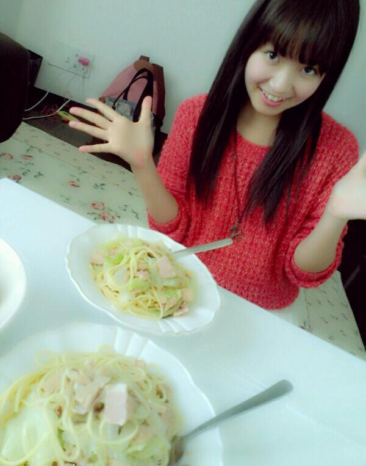

| 2012/10 26 Fri | ひめたん(*>ω<*)そ の221 |

みさみさお姉たまのおうち！
和パスタ美味しそうでっしょー(^^)
てかねそうなのひめたんね
みさみさのブログの写真みたかな＊
あーもうちょっとかわゆく
寝るんだったー
多分あれ撮ったの食後なの。
お腹いっぱいだったの。
あー恥ずかしい///
そういやちまといいまあやといい
ひめたんの寝顔をブログに貼ってからー
てかひめたん寝てばっかだな(´・ω・｀)
メンバーさんに写真撮られんように
気をつけんとな。
寝顔てのは気抜けててひっどいからね←
ふっはは
友達のノートの落書きが
なんなんだこれは。

天才画伯をまたひとり見つけた
「ひめたんびーむツボすぎる(笑)」とか
光栄すぎる←
画伯も今日からひめきゅんさん←
うひょひょとか言わんわー！
うひょひょ
この仁王立ちで構えてる感じがもう
何とも言えないね。いとをかし。
あーそうだそうだ！
みなさんのコメント読んで気づいた。
横浜個握は4部5部あるんだね♪
じゃけ4部着ぐるみ、5部ワンピ(^^)
お楽しみにね◎

 山手線で好きな駅といえば！？
山手線で好きな駅といえば！？
高田馬場駅！
鉄腕アトムが流れるんだよね(ω)
ちゃんちゃんちゃちゃんちゃちゃーんっ
日芽タソのお姉さんはどんな方なんですか？
ひめたそのお姉さん
3っ上の現役女子大生。
妹たちから「姉さん」って呼ばれてる。
背は姉妹で一番ちっちゃごほっごほ。
運動苦手で頭は多分姉妹で一番賢い。
音楽が好き。歌うの上手。
ギターも弾きます。
ちっちゃい子が大好き。
ボランティア活動大好き。
ひめたんすうが芸能界入ったきっかけは
姉さんにあるかもって最近思う。
おにゃのこ姉妹は手が出ないかわりに、口喧嘩ばっかしてましたねー
でもね実はいいエピソードもちゃーんとあるんですよ。でも言わなーい///
僕の妹になってくれますか？
よ、喜んで！おにいちゃーん(*>ω<*)
もうね本気で「お兄ちゃん♪」とか
ゆってみたいいいいい
ひょっとして、ひめたんは天使ですか？ヾ(*'ω'*)ノ
んーばれちゃったもんはしょうがない。
そう。ひめたんは天使さんなの(*'ω'*)
ほらおめめがきらきらしてるでしょ？
るん
ひめたんのお家に遊びに来たことのあるメンバーは？
そういやいない！
この春からは週6学校だからねー
お部屋にご招待したいんだけどね←
さあ一番最初に遊びに来るのは誰か
予想してみましょう＊
方言を話す地域の人って、共通語を聞いたときに違和感ってゆーか、そーゆーのある？
ひめたんの場合、自分が話してる言語は広島弁だってちゃんと把握してるからね
あーこれが標準語なのかふむふむって感じかしら。
ひめかはハロウィン仮装するのー？(*^^*)
したいなー♪
ハロウィンコスー♪
ひめたんは、朝何時に起きるの？
日によりけり。
最近は体育祭の大縄の練習あるから
5:30とかよ！はやーい←
ひめたんは、夜何時に寝るの？
これもまた日によるかな。
21時すぎたら眠気が襲ってきて
そっからやらなきゃいけないことやりきるまでひたすら睡魔と戦います。
たまに負ける。気がついたら寝てる。
なーんか本能のままに生きてるひめたん
かっこよす(^ω^)
ひめたんがよくご飯に行くメンバーは誰？
るんるんとか多いかな＊
ちなみにいっちゃん最近だと
みさみさちまとパスタ行った！∪・ω・∪
ひめたんが握手会で心がけていることは何？
ちゃんと言葉で気持ちを伝えること。
みなさんの目を見て話すこと。
あとは楽しむこーと(^^)！
ひめたんがレッスンで心がけていることは何？
ベースは大切にしつつ、ダンスの中に自分の色がちゃんと出るようにってことは研究するかなー＊
鏡が使えるレッスンルームでの練習は大事。ほんとに大事!!!
ひめたんが握手会に行く時の洋服選びのポイントは何？
んー気分で決めることが多いかな♪
基本はひめたんの好みだけど、たまにゃ冒険することもあーる。
これが悩むんだよねーっ
もし、ソロデビューが決まったらどんな歌が唄いたい？アイドルぽいの?バラード？
アイドルっぽいのいーねいーね(ω)るん
バラードは難しい。奥が深い。
アップテンポのがいいなー
ここ一年でどのくらい背は伸びてる？
半年で0.4センチ伸びてたよ
もうちょっと成長期らしい＼(^^)／
 好きな洋服のブランドはだいぶ前に答えてたけど、最近これがきてるってのはあるかな？
好きな洋服のブランドはだいぶ前に答えてたけど、最近これがきてるってのはあるかな？
最近はブランドの捕らわれずってゆーか、服に惚れることが多くなったかな＊
ひめたんの中で最近キテるのは
LODISPOTTOってとこ！
とにかくガーリーな感じよ♪
名古屋個握の時に着てたのとかロディ！
芸事が上達するっていう神社とか行ったことある？
行ったことなーい←
なんか素敵な神社ね◎
いきたい行きたいいきたいな♪
ファンレ何通か受け取りました(*>ω<*)
ちょっとずつ読んでるよー
みんなほんとにありがとうっ！
んーねむねむ。
(＊´・ω・＊)ひめたん
コメント(146)
2012/10/26 01:00